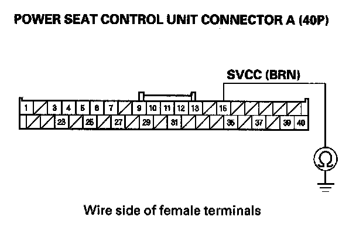
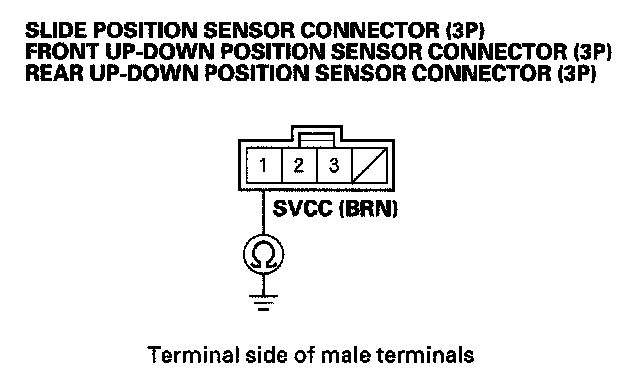
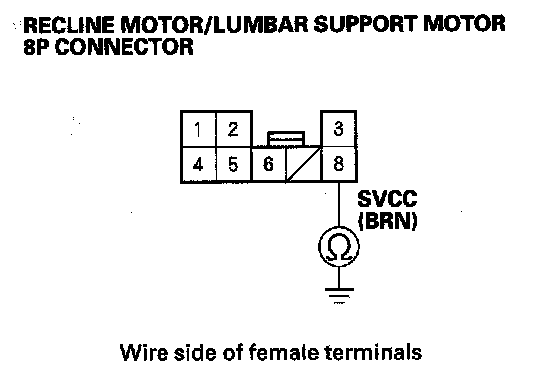

B1836
DTC B1836: Power Seat Position Sensor Circuit ShortNOTE: If you are troubleshooting multiple DTCs, be sure to follow the instructions in B-CAN System Diagnosis Test Mode A.
1. Clear the DTC with the HDS.
2. Turn the ignition switch OFF and then back ON (II).
3. Operate the power seat adjustment switch in all direction for more than 1 second each.
4. Check for DTCs with the HDS.
Is DTC B1836 indicated?
YES - Go to step 5.
NO - Intermittent failure, the driving position memory system is OK at this time. Check for loose or poor connections at the power sear control unit connectors.
5. Turn the ignition switch OFF.
6. Disconnect power seat control unit connector A (40P).
7. Disconnect the 4P connectors from the slide position sensor, the front up-down position sensor, and the rear up-down position sensor, and disconnect the 8P connector from the recline motor/lumber support motor subharness.

8. Check for continuity between power seat control unit connector A (40P) terminal No. 15 and body ground.
Is there continuity?
YES - Repair short to ground in the wire.
NO - Go to step 9.

9. Check for continuity between body ground (motor body) and the No. 1 terminal of the slide position sensor, the front up-down position sensor, and the rear up-down position sensor.
Is there continuity?
YES - Replace the motor/position sensor that has continuity.
NO - Go to step 10.

10. Check for continuity between body ground (seat frame) and the No. 8 terminal of the recline motor/lumber support motor subharness.
Is there continuity?
YES - Check for a short to ground in the wire of the recline motor/lumber support motor subharness. If the harness is bad, repair it, if the harness is OK, replace the recline motor/position sensor.
NO - Replace the power seat control unit.